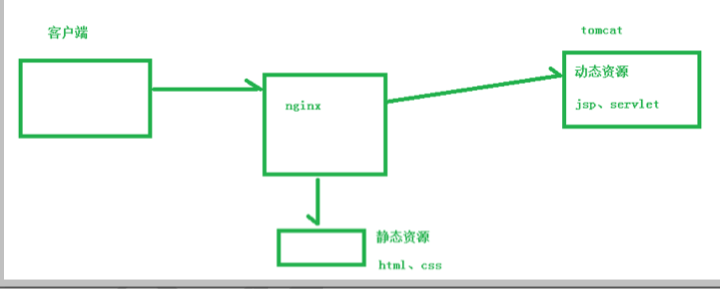
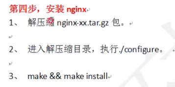
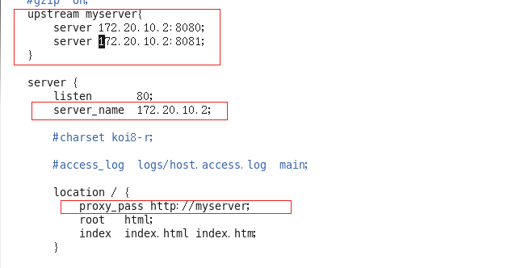
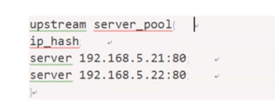

nginx01
第一天
第一节(nginx特性)
反向代理
正向代理—–通过代理服务器
反向代理
- 暴露的是反向代理服务器,隐藏真正的服务器
- 不用自己配置服务器(VPN需要自己配置—正向代理)
- 把代理服务器和tomcat(要访问资源的服务器) -> 看成一个整体
负载均衡
动静分离

第二节(配置)
nginx安装
安装前:依赖
pcre
mv pcre-8.37.tar.gz /usr/src/ ———-把pcre-8.37.tar.gz 移动到/usr/src/
tar -xvf pcre-8.37.tar.gz ——- 解压代 /usr/src/目录下
cd pcre-8.37 ./configure ——- 进入解压目录执行config命令(相关的配置)
make && make install ——编译并且安装
查看版本号 —安装成功!!!
zlib
openssl
yum -y install make zlib zlib-devel gcc-c++ libtool openssl openssl-devel
正式安装

cd /usr/src
tar -xvf nginx-1.12.2.tar.gz
cd 目录
./configure
make && make install
软件一般都是安装在 /usr/local/
测试启动nginx
切换到 /usr/local/nginx/sbin ——-运行./nginx 报错libpcre.so.1没找到
解决问题:
find / -type f -name libpcre.so. #查看libpcre.so文件位置
ln -s /lib64/libpcre.so.0.0.1 /lib64/libpcre.so.1 #建立软链接
访问nginx
/usr/local/nginx/conf/nginx.conf 可以修改端口
linux修改拦截端口的权限 默认会拦截80端口
/sbin/iptables -I INPUT -p tcp –dport 80 -j ACCEPT
/etc/rc.d/init.d/iptables save
d
d
d
dd
d
d
第三节(常用命令)
基础
查看版本号
./nginx -v ——–要加./ 不然会报错
停止nginx
./nginx -s stop
开启nginx
./nginx
重新加载nginx 会自动加载配置文件
./nginx -s reload
报错 找不到配置文件
解决:
1
/usr/local/nginx/sbin/nginx -c /usr/local/nginx/conf/nginx.conf
使用nginx -c的参数指定nginx.conf文件的位置
nginx的配置文件(文件放在与md文件同目录下)
位置
全局块(全局的配置)
worker_processes 1;
数字越大,处理并发的能力越强
event块(nginx与用户的网络的连接)
worker_connections 1024;
每个worker_processes 最大的连接数 1024
http块(最频繁)
http全局块
include mime.types;
default_type application/octet-stream;
#log_format main ‘$remote_addr - $remote_user [$time_local] “$request” ‘
# ‘$status $body_bytes_sent “$http_referer” ‘
# ‘“$http_user_agent” “$http_x_forwarded_for”‘;
#access_log logs/access.log main;
sendfile on;
#tcp_nopush on;
#keepalive_timeout 0;
keepalive_timeout 65;
#gzip on;
server块
- 全局server
- locationserver
配置实例
实例1反向代理
效果: www.fyz.com经过nginx跳转到我们自己搭建的linux+tomcat服务器
步骤一:tomcat安装 ——redis哪里有教程
步骤二:
步骤二:找到hosts文件进行修改即可
mac:/etc/hosts
win:C:\Windows\System32\drivers\etc\hosts
success:
步骤三:不报错,却无法转发
问题一:
1
`# vim /etc/nginx/nginx.conf`
1
`# nginx -s reload`
问题二:
1
`# cd /etc/selinux``# vim config`
将SELINUX设置为disabled，然后重启你的虚拟机 reboot
实例2
效果
访问路径> http://www.fyz.com:9001/vod/8081.html (www.fyz.com:nginx服务器的ip地址)
新建多一个端口8081的tomcat 并修改端口
/usr/local/tomcat8081/apache-tomcat-7.0.57/conf/server.xml 中修改
8080 —>8081
8009 —>8019
8005—>8015
修改/usr/local/nginx/conf/nginx.conf
扩展
负载均衡
访问:http://www.fyz.com/edu/8080.html
端口 号80访问时不用加
修改配置文件

项目分布在两个tomcat ,每一个tomcat的webapps/edu/8080.html
负载均衡就是通过nginx 随机访问两者中的一个tomcat
服务器分配的策略
轮询
weight 值越大,分配给tomcat 的客户机就越多
ip_hash 一个用户绑定一个tomcat 第一次访问那一个服务器下一次就还是那个

fair 根据相应时间
d
动静分离

修改配置文件
以上是静态 资源的加载 在nginx服务器完成
动态资源则转发到tomcat等后端服务器上获取
expires属性:3d 适合长时间不更新数据的网站
不需要从后端服务器tomcat上获取,直接从nginx上获取,节约资源
高可用
准备工作
keepalived安装成功
keepalive的配置文件 —–对应ziliao的资料有
-
启动keepalived
nginx的原理
一个nginx有 一个master 多个worker
这种机制有什么好处?
利于nginx做热部署操作
./nginx -s reload 后 cli发送的请求会转发的第二个worker进行处理,不影响第一个worker的工作
一个worker占用一个进程,即使有bug也互不影响,worker之间的任务争抢也不用造成服务的中断
设置多少个worker合适?
- nginx与redis一样,有多路复用的功能,即是一个进程里面有一个主线程,但win系统没有这种功能
- 一个worker可以把一个CPU性能发挥到极致,所有worker数量==cpu核心数
一次cli访问nginx需要worker_connect占用worker连接数是?
- 2个—访问静态资源
- 4个—访问tomcat等动态资源
-
静态态4 * 1024 /2 = 2048
动态4 * 1024 /4 = 1024
答案有两个
公式: